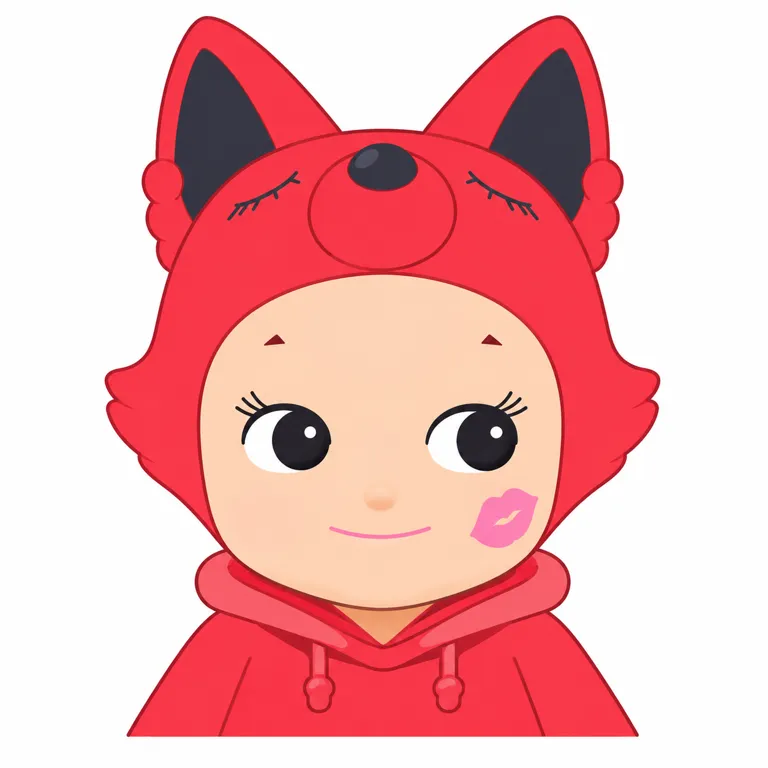

V01左正面帽额较平坦处，照片局部色
V01 [2048, 1280] @ [602, 454]STANDARD STUDY · 2026-10-29
Sonny Angel 颂尼天使
脸保持熟悉，惊喜长在头顶。
用稳定的娃娃脸与变化头饰建立系列收藏，再以附着结构进入随身场景；交换是可见意向，未推断成交或复购率。
查看真实平面测试 ↗
01 / 对象、权属与起源
- owner
- creator
- 未知 / null
- operator
- Dreams Inc.／株式会社ドリームズ
- relation
- 官方品牌与版权署名Dreams。添谷彻常见于二级介绍，本轮未由原始作者署名确认其具体设计分工；联名设计与公司所有权分开。
- origin
- path
- 产品先行
- year
- 2004
- story
- 2004-05-15为18cm活眼人偶起点；2005迷你Animal系列是另一产品节点，不把2026当前Refine当首代规格。
02 / 时间线
| 时间 | 事件 | 证据类型 | 来源ID |
|---|---|---|---|
| 2004-05-15 | 18cm活眼人偶诞生，官方回顾 | self_report |
|
| 2005 | 动物头饰迷你系列起点 | self_report |
|
| 2022-06-28 | Donna Wilson Creatures计划发售 | self_report |
|
| 2024-05-23 | Looking Back附着/回头系列计划发售 | self_report |
|
| 2025-01-17 | 周年图鉴和两公仔套装零售 | fact |
|
| 2026-10-22 | Makeup Angel计划发售，地区或不同 | self_report |
|
03 / 表达、用户与时代窗口
- expression
- line
- 带着一点意外的快乐，安静地陪在你旁边。
- sentence_type
- 陪伴
- basis
- inferred
- core
- personality
- 陪伴、安静、神秘小天使，非完整长篇人物传记
- emotion
- 内收
- action
- 原型站立，HIPPERS攀附回头；头饰更新而非每次换身份
- basis
- official
- insight
- scene
- 桌面开盒、旅行拍照和手机边缘
- behavior
- 收同类头饰、补缺款、发布交换意向
- state
- 在重复日常中追求小惊喜和个人偏好清单
- conflict
- 随机获得与明确想要某款之间有落差，也可能催生交换与溢价
- unsaid
- 这是我偏爱的那一只，不必追全套。
- basis
- inferred
- circle
- who
- 迷你公仔收藏者、兔子等头饰主题爱好者、手机装饰者；性别年龄占比未知
- where
- 官方/授权店、陈列与交换社群
- buy
- 用户有高价入手自述，未核凭证；固定首选与出清可并存
- signs
- 侧视大眼、睫毛、微笑、婴儿体与头饰组合；Robby是独立友伴角色
- share
- 合照更新、系列清单和换款帖
- breakout
- HIPPERS将陈列转为物件附着；新增销量贡献null
- pendulum
- position
- 甜美治愈
- against
- 低叙事门槛与随身陪伴可降低理解成本；不宣称这一情绪代表全市场趋势
- 组织
- Dreams运营同公司其他IP，财务不得移入；Donna Wilson与美妆品牌是联名方，不据此变更所有权。
- 窗口
- 2004—2005从人偶到小尺寸产品；2024附着与2026联名说明载体/主题延展，不证明年年增长。
04 / 实际看图：身份、变体与载体
以下逐图观察只限实际可见角度。图像URL日期不作作品创作日期，产品照片不作标准三视图。
左正面狐帽红色、黑耳内、额上狐鼻、肤色脸侧视大眼、颊吻印；右背面尾巴与白翅膀。衣面金属反光不是本体轮廓。
只描述实际打开原图可见角度，不补隐藏面或从URL推首发。
[s3]
坐姿，头顶卷发、睁眼，双臂上举、双腿朝前；不能把当前动物帽认作2004所有版本必需。
只描述实际打开原图可见角度，不补隐藏面或从URL推首发。
[s1]
尖耳红狐狸帽有横向眼与长鼻，肤色小脸及红色竖纹衣身，侧有尾；衣身纹样来自联名转译，不判定实体为针织。
只描述实际打开原图可见角度，不补隐藏面或从URL推首发。
[s2]
蓝绿鼠帽、粉色耳内，转头、弯腿攀附边缘，背部胶面标注与白翅膀；这是结构说明插画，非同角度棚拍。
只描述实际打开原图可见角度，不补隐藏面或从URL推首发。
[s6]
蓝色帽与金属风格上衣、分叉鹿角，侧视脸和吻印延续；尾部造型与狐不同。
只描述实际打开原图可见角度，不补隐藏面或从URL推首发。
[s3]- 外形五轴与头脸
- archetype
- 类人
- silhouette
- 大头小身
- mark_position
- 头顶
- 五官
- mark
- 婴儿脸、侧视大眼白月牙、短眉睫毛、小笑、动物或食物头饰与小翅膀组合
- face
- 当前V01双眼间隔明显，黑瞳侧向、白眼角，睫毛向外，鼻为实物轻起伏、嘴很小
- emotion
- 内收
- odd
- 婴儿身体与动物头饰反差；衣服、肤色、姿态和年代并非全恒定
- density
- 中等
- naming
- 其他
- group
- 单角色
- 识别组合撞车边界
- 借鉴“稳定身份＋系列变量”时，应重新设计脸部、头饰接口和身体关系，不整体搬用侧视婴儿脸、动物帽、裸娃与翅膀组合。
- 跨图不变量与变量
- recurring
- 当前迷你系列脸部语法、娃娃感与翅膀意象。
- variables
- 帽、肤色、衣服、动作、胶面与年代；Robby独立。
- unverified
- 所有历史款的统一比例与全角度模板。
05 / 色彩与材料
- mode
- 多色系列
- main
- 浅肤色脸配多色头饰；本次锁定红狐联名
- signature
- 脸色与五官维持身份，帽色与服装配合系列主题
- notes
- 金属涂装反光不是插画固有色；旧款与各地区版本不得视为同一工艺
V01左脸额头，不作统一肤色
V01 [2048, 1280] @ [526, 494]色值为原始图像取样的屏幕近似；背景、主角与材料分开，不是官方色卡。
本轮当前Animal/Fruit/Looking Back/Makeup官方明列ATBC-PVC；不回推2004人偶材质。金属风格涂装不等于整体金属。附件胶有表面条件，未做耐久测试。06 / 代表产品与内容载体
| SKU/载体 | 发售/出版 | 价格·币种·地区 | 尺寸 | 材料/工艺 | 边界 | 来源ID |
|---|---|---|---|---|---|---|
| 2004 18cm人偶 | 2004-05-15（官方回顾） | 未知 / null | 高约18cm | 未知 / null | 活眼人偶，不套用当前迷你配方 |
|
| Animal Ver.1 Refine SAS65375 | 迷你系列起点2005；此Refine首售null | 当前日本JPY1210含税/盒 | H75—100mm；32—34g | ATBC-PVC | 12常规+隐藏；12盒端箱不保证全部 |
|
| Fruit Regular SAS65380 | 未知 / null | 当前日本JPY1210含税/盒 | H75—100mm；32—34g | ATBC-PVC | URL2019不作为核实首售日 |
|
| HIPPERS Looking Back SAS65911 | 2024-05-23计划/地区或不同 | 当前日本JPY1430含税/盒 | W30—41×H63—94×D25—30mm | ATBC-PVC、附着胶 | 12+1；附着力因表面条件下降 |
|
| 20周年书+2公仔 SAS65952 | 2025-01-17正午 | 日本JPY8800含税/套 | A5书/196页；公仔尺寸null | 书＋2体迷你公仔，配方null | 日英双语；发行ネコ・パブリッシング；1482种收录非销售数量 |
|
| Makeup Angel SAS67529 | 2026-10-22计划/地区或不同 | 日本详情JPY1650含税/盒 | W36—38×H71—86×D30—35mm；30—33g | ATBC-PVC，金属风格涂装 | 5款/6盒端箱9900JPY含税；可能重复/不保证集齐；主页列表1540与详情有差异 |
|
- primary
- 实物潮玩
- secondary
- 授权图案
07 / 用户证据、商业数字与反证
- source
- u1
- account
- 每天认识一个品牌
- read_scope
- 正文，2025-07-10，图片未逐页实读
- finding
- 提供中文入门话语；年龄比例、创始动机与复购结论未采。
- boundary
- 介绍账号不是用户统计。
- source
- u2
- account
- littlefatsheep
- read_scope
- 正文与当前可见评论，编辑08-11
- finding
- 集中收藏兔子，评论有高价抱怨与询售，作者说兔子不出。
- boundary
- 持有与高价入手均自述，未核凭证。
- source
- u3
- account
- 排骨IVAN
- read_scope
- 正文与可见4条评论区，03-18
- finding
- 列蓝圈持有、红圈欲换，评论提出出小鹿/原价出猫鸭。
- boundary
- 不推断已交换；未逐图辨全部款。
| 指标 | 数值 | 单位 | 期间/主体 | 证据 | 来源ID |
|---|---|---|---|---|---|
| 当前About设计种类自述 | 1300 | 多种 | 官网访问2026-10-29，累计设计非销量 | self_report |
|
| 官方周年书收录商品 | 1482 | 种 | 2025限定图鉴，口径不同于About | self_report |
|
| 独立IP营收/净销量/交换成交率 | 未知 / null | 未知 / null | 截至2026-10-29 | hypothesis |
|
- 反例与替代解释
- 官方2023限购和2024仿品警告显示供给、倒卖与渠道信任成本；它们不证明真实销量或每件二手真伪。收藏帖同时有高价抱怨、收娃与不愿出售。用户标题的“鼻祖”“过气”“回春”均非市场统计，未核大规模衰退。
- 用户理论检查
- shell
- 帽子不是唯一识别符，脸部语法与婴儿比例共同支撑
- core
- 轻陪伴而非密集剧情，用户自己命名偏好
- shadow
- 不要把裸娃、侧视脸、动物帽整套组合当通用模板
- two_layers
- surface
- 开盒惊喜与可爱陪伴
- deep
- 主题偏好、补缺与交流可能并行
- validation
- 有供给规则和交换意向，没有用户随机实验或复购数据
08 / 机制：证据支持到哪一步
固定脸部身份，让头饰成为可持续扩展的分类变量。
- claim
- 固定脸部身份，让头饰成为可持续扩展的分类变量。
- type
- inference
- evidence
- 官方访谈提到检查不同角度保留脸；Animal/Fruit与联名保持脸部语法。
- boundary
- 设计机制证据强；带来的商业增量未量化，长期用户也可能只追兔子。
随机开盒与明确偏好之间的缺口，为交换和补款提供动机。
- claim
- 随机开盒与明确偏好之间的缺口，为交换和补款提供动机。
- type
- inference
- evidence
- 店页注明随机/可能重复；实读换娃帖列持有与需求。
- boundary
- 官方规则强、用户样本弱；未核交易完成，不能称人人集齐或显著增加复购。
让产品攀附物件，把收藏带入工作和随身场景。
- claim
- 让产品攀附物件，把收藏带入工作和随身场景。
- type
- inference
- evidence
- Looking Back的转头姿态与胶面说明，官方给出桌面/手机用途。
- boundary
- 用法可核；胶损耗、用户留存与触达增量未知。
- 给lab/form/studio的有边界启发
- lab
- 研究“未知惊喜”与“明确偏好”的冲突，先确认用户是否真的需要随机。
- form
- 为独立原创身份定义少量恒定轴，再给主题变化留接口；不可搬用其婴儿脸。
- studio
- 把物件接触面设计为使用情境，验证附着力、耐久与补款负担；本轮未开展开发。
09 / 真实平面提示词测试
以下为可见作品的研究重建，不是原作者提示词，也不证明原作由AI制作。附图、纯文字和语言结论严格分开。
英文附图v1接近事前锁定的V01左正面头肩身份；不是完整全身测试。眼睛略大、鼻更实、残留浅色阶和衣摆裁切，胸图案未完整保留；纯文字、中文与稳定性未测。
sa-flat-ref-v1 · ready（限定范围）

- language
- en
- input_mode
- reference_assisted
- target_scope
- V01左正面红狐联名的头肩/上衣二维转译，排除腹腿与背面
- observations
- 狐帽轮廓、黑耳内、额上狐鼻、脸部侧视大眼、颊吻印和红帽衫位置接近。眼睛略大、鼻更突出、线与浅渐变不同；衣摆裁切偏高、胸图案未完整出现。限定头肩身份通过，严格平涂/全身未通过此测试。
Use only the FRONT-view figure on the LEFT of the attached product reference. Create a single flat 2D head-and-shoulders character study on a pure white square canvas, cropped exactly at the lower hem of the red hoodie; do not include the belly, legs or rear-view figure. Preserve the same pale-peach oval toy face, broad forehead, tiny short triangular brown eyebrows, large glossy black side-glancing eyes with white crescents and three fine outer lashes, small subtle rounded nose, very small pink closed smile and the pink lip-print on the viewer-right cheek. Preserve the exact red fox headpiece: two tall triangular ears with nearly black interiors, projecting round red muzzle with a dark round nose at the center of the forehead, two tiny closed-eye lines on the fox muzzle area, and two side cheek tufts. Keep the red hooded top around the neck and shoulders with its hood rim and two small drawstrings. Translate metallic red reflection into a few simple solid red and pink-red local color areas, not plastic shine or lighting. Keep the original toy head shape and eye spacing, without turning it into an anime character. Put no letters, words or logos anywhere; the chest lip-print silhouette can remain but must have a blank center. Use fine muted reddish-brown contour lines and clean flat fills. No text, watermark, duplicate view, animal body, scenery, glow, gradient or cast shadow. Reconstruct only the stated visible head-and-shoulders scope.下载原文
全部测试记录（含未通过版本）
sa-flat-ref-v1 / ready
- prompt_id
- sa-flat-ref-v1
- subject_id
- sonny-angel
- version
- 1
- target_scope
- V01左正面红狐联名的头肩/上衣二维转译，排除腹腿与背面
- carrier
- flat
- language
- en
- input_mode
- reference_assisted
- reference_image_ids
- V01
- generated_image_path
- assets/flat-ref-v1.webp
- prompt_file
- prompts/flat-ref-v1.txt
- status
- ready
- observations
- 狐帽轮廓、黑耳内、额上狐鼻、脸部侧视大眼、颊吻印和红帽衫位置接近。眼睛略大、鼻更突出、线与浅渐变不同；衣摆裁切偏高、胸图案未完整出现。限定头肩身份通过，严格平涂/全身未通过此测试。
- revision_reason
- 首轮锁定头肩范围；没有以换目标绕过偏差。
- tested_at
- 2026-10-29
- original_sha256
- a79a05af2a7e11a66697c2a892054f1fb00ac2cdf024fdcd3fb3fad357230718
- display_sha256
- e2c067537ff3e3e793e0f6c7c5a3ae25d72779b7e625a7c7d2cdc1f5afb8744a
- display_size
- 768
- 768
- bytes
- 22034
- exact_prompt_sha256
- 051d880e5f15c392bc8e18ac4ef852a81099b620585d0229df5ca90071131f78
Use only the FRONT-view figure on the LEFT of the attached product reference. Create a single flat 2D head-and-shoulders character study on a pure white square canvas, cropped exactly at the lower hem of the red hoodie; do not include the belly, legs or rear-view figure. Preserve the same pale-peach oval toy face, broad forehead, tiny short triangular brown eyebrows, large glossy black side-glancing eyes with white crescents and three fine outer lashes, small subtle rounded nose, very small pink closed smile and the pink lip-print on the viewer-right cheek. Preserve the exact red fox headpiece: two tall triangular ears with nearly black interiors, projecting round red muzzle with a dark round nose at the center of the forehead, two tiny closed-eye lines on the fox muzzle area, and two side cheek tufts. Keep the red hooded top around the neck and shoulders with its hood rim and two small drawstrings. Translate metallic red reflection into a few simple solid red and pink-red local color areas, not plastic shine or lighting. Keep the original toy head shape and eye spacing, without turning it into an anime character. Put no letters, words or logos anywhere; the chest lip-print silhouette can remain but must have a blank center. Use fine muted reddish-brown contour lines and clean flat fills. No text, watermark, duplicate view, animal body, scenery, glow, gradient or cast shadow. Reconstruct only the stated visible head-and-shoulders scope.
10 / 缺口与研究档案
- 自然人初始设计分工与最早草稿未知；起点日期为官方回顾。
- 独立营收、净销量、复购率、收藏人群占比和二手成交数据null。
- 小红书实读3篇正文/可见评论，未逐张看完用户图；年份缺省不补推，交换意向不等于成交。
- 附图英文仅红狐版本正面头肩二维转译通过限定范围；眼睛略大、鼻更突出、残留浅色阶、衣摆裁切与胸图案不完整。
- 纯文字、中文、跨种子稳定性未测；没有3D/毛绒测试。
- 官网主页列表与详情价不同，采用2026-10-29详情价，历史首售价未知。
下游原创开发、3D与毛绒生成未执行；本研究不代表用户审美认可。
card.jsonsources.jsonvisual-index.jsonproducts.jsoncolor-system.jsonprompt-tests.jsonsearch-log.jsonresearch-notes.json
检索日志
- platform
- web
- queries
- Sonny Angel 2004 2005 creator official history
- ソニーエンジェル 20周年 図鑑 価格
- Sonny Angel shu uemura 2026 price materials
- site.sonnyangel.com HIPPERS counterfeit notice
- status
- executed
- platform
- 小红书站内
- queries
- Sonny Angel 品牌介绍
- Sonny Angel 产品汇总
- Sonny Angel 交换
- status
- executed
- read_notes
- 3
- scope
- 正文/当前可见评论，非随机样本，不收集隐私订单。
11 / 来源与访问边界
s1 · 品牌起源与当前自述
Dreams · 发布 None · 实读 full · 采集 2026-10-29
2004-05-15先有18cm人偶；1300多种与33国为当前页面自述、非销量；页脚650多种口径陈旧不合并。
原始来源 ↗s2 · Donna Wilson联名与创作过程访谈
Dreams · 发布 None · 实读 full · 采集 2026-10-29
2022-06-28计划发售；2005第一套动物迷你公仔；保留脸并多角度检查头饰，作者说法不作用户统计。
原始来源 ↗s3 · Makeup Angel发售公告
Dreams · 发布 2026-09-17 · 实读 full · 采集 2026-10-29
2026-10-22计划上市，5款/6盒组合可能重复，地区日期不同。
原始来源 ↗s4 · Makeup Angel当前官方日本店规格
Dreams · 发布 None · 实读 full · 采集 2026-10-29
SAS67529，含税1650JPY；主页列表1540与详情不一致，采用详情并保留差异。
原始来源 ↗s5 · Animal Ver.1 Refine官方规格
Dreams · 发布 None · 实读 full · 采集 2026-10-29
1210JPY含税、ATBC-PVC、75—100mm；12款与隐藏，不保证一端全。
原始来源 ↗s6 · Looking Back公告
Dreams · 发布 2024-04-26 · 实读 full · 采集 2026-10-29
5月23日计划上市、20周年、转头附着结构。
原始来源 ↗s7 · Looking Back日本店规格
Dreams · 发布 None · 实读 full · 采集 2026-10-29
1430JPY、ATBC-PVC、63—94mm高，胶的附着力取决于表面。
原始来源 ↗s8 · 20周年书与双公仔限定套装
Dreams · 发布 None · 实读 full · 采集 2026-10-29
2025-01-17正午发售，8800JPY含税，A5/196页，1482种商品档案非销量。
原始来源 ↗s9 · Fruit系列日本店规格
Dreams · 发布 None · 实读 full · 采集 2026-10-29
当前1210JPY含税，ATBC-PVC，H75—100mm；URL的2019不是已核首售日。
原始来源 ↗s10 · 非授权倒卖与限购通知
Dreams · 发布 2023-07-28 · 实读 full · 采集 2026-10-29
官方承认倒卖与假货风险并加强限购；二倍叫价不是成交或官方营收。
原始来源 ↗s11 · HIPPERS仿品警示
Dreams · 发布 2024-07-19 · 实读 full · 采集 2026-10-29
仿品流通为官方警告，不鉴定本轮用户单件商品。
原始来源 ↗u1 · 每天认识一个新品牌
每天认识一个品牌 · 发布 2025-07-10 · 实读 partial · 采集 2026-10-29
实读正文；其年龄比例、复购率提升与盲盒开创说法缺原始证据，不采为事实。
原始来源 ↗u2 · 有些收藏一旦开始就停不下来
littlefatsheep · 发布 None · 实读 partial · 采集 2026-10-29
显示编辑于08-11；正文偏好兔兔，评论询价、收娃、嫌贵和作者不出兔子；不是订单或随机样本。
原始来源 ↗u3 · 樱花趴趴系列换娃
排骨IVAN · 发布 None · 实读 partial · 采集 2026-10-29
显示03-18；正文用圈色表明持有款/欲换款，可见评论出小鹿/原价出猫鸭。未读图上全部款别，未核交换完成。
原始来源 ↗